Chapters
UX Designer
6 Designers
4 Engineers
Oct 2023 – May 2024
(8 Months)
At my university, a student-driven club hosts annual TEDxTalks conferences with a unique theme. The club comprises cross-functional teams like business, design, logistics, and engineering who come together to make the event run smoothly. Every year, the organization's design team creates a responsive website to lead visitors and potential audience members to the online ticket sales portal.
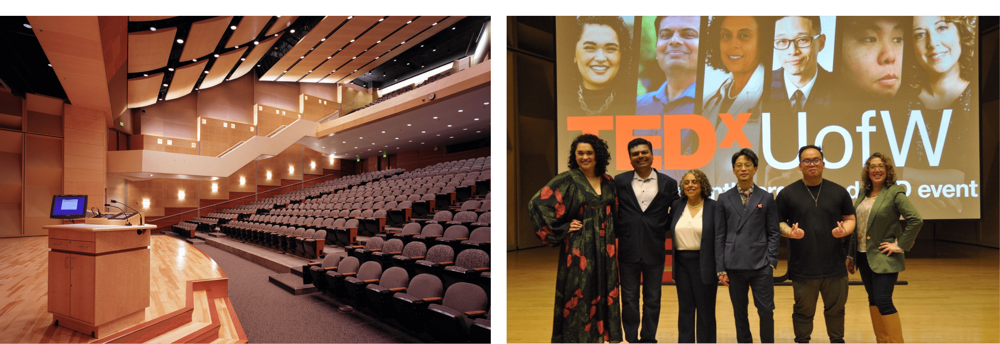 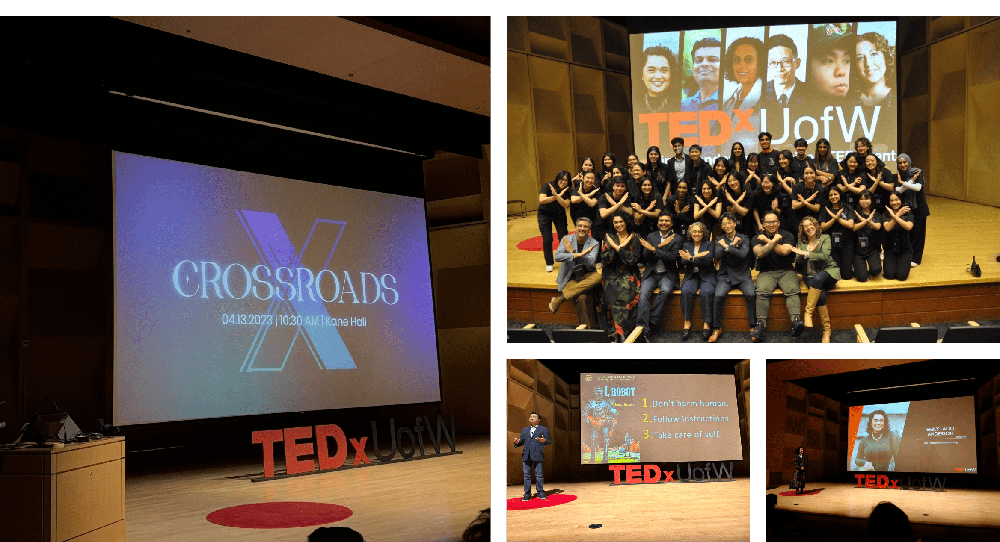Images are from the TEDxUofW Crossroads Conference hosted at the University of Washington in April 2024.
I was involved in logo creation, visual design, user research, and design systems. Because I had a long history of collaborating with engineers and speaking their language, I became the design team’s representative to the engineering team after the design handoff, when the final deadline for making the website live loomed closely.
Perhaps the most influential factor after user research was the design team themselves (including me)! Each individual brought a unique set of skills that culminated in an epic fusion of branding, visuals, motion, and user experience. All are proudly represented on the product, consistent with the marketing campaign and the branding for the annual conference.
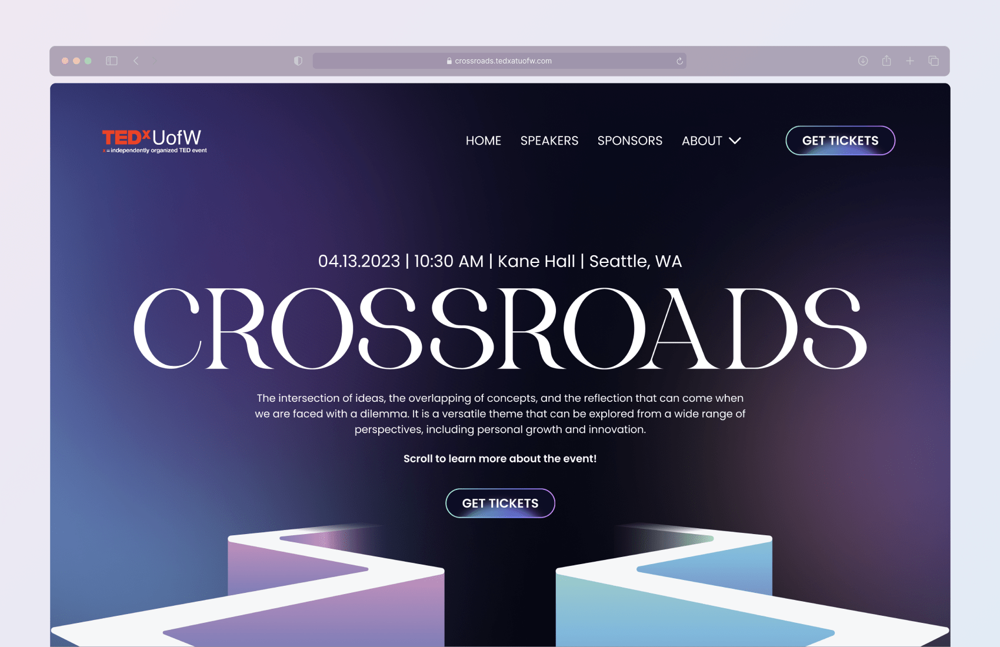 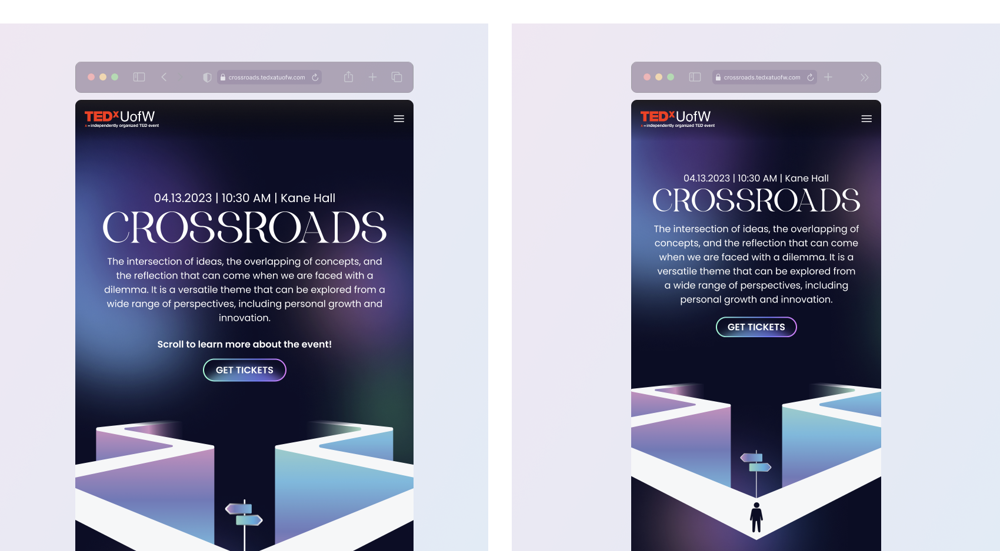 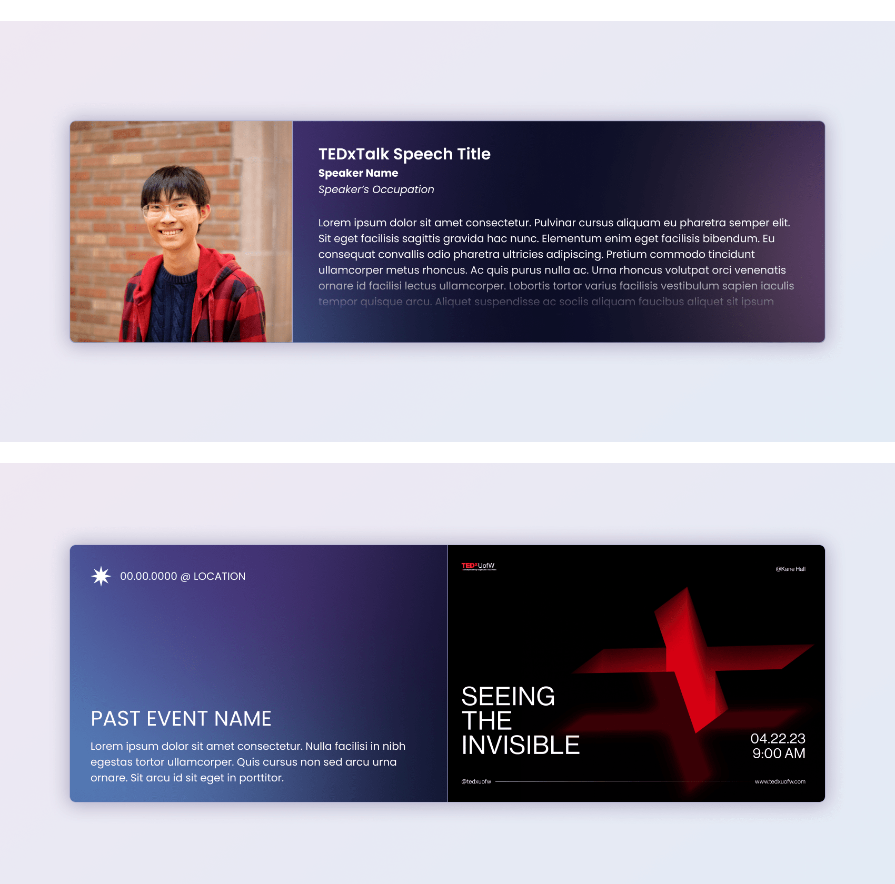 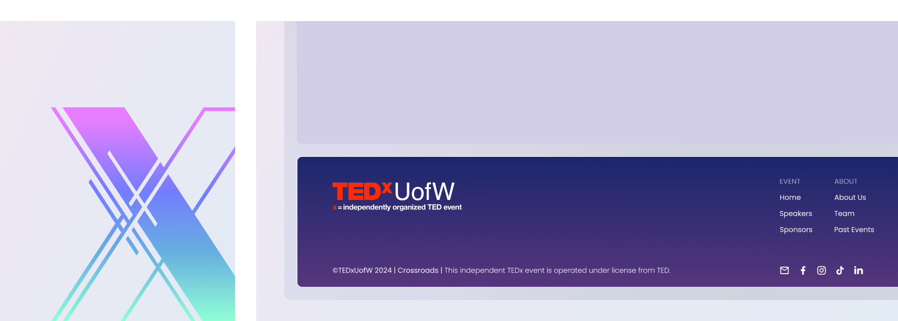Check out the complete website here.
The conference's theme is open to interpretation. It may mean something different to different people. However, the organization needed to decide on a direction, and the design team was at the forefront.
When I thought of crossroads, some keywords that jumped out at me were fate, dilemmas, decisions, vagueness, and confronting the unknown. Then, I formed a mood board of visualizations that emulated those keywords and presented my reasonings and ideas during a team meeting.
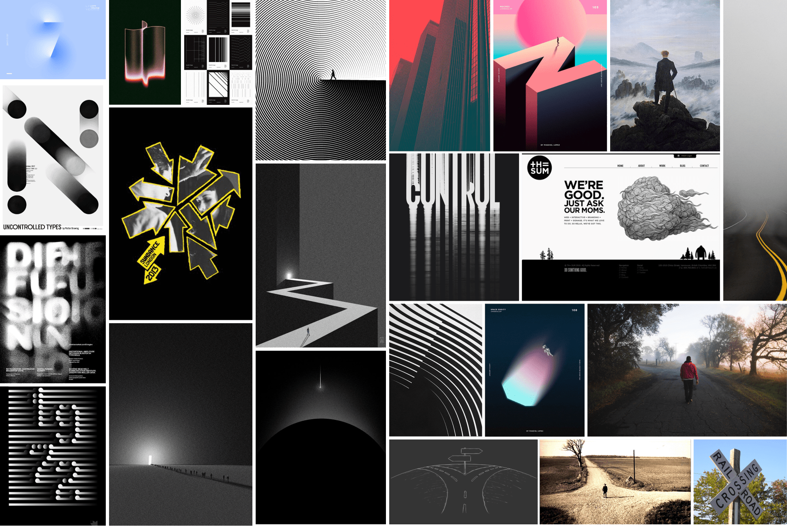I sourced the images from Pinterest and the internet.
It was wonderful seeing how my teammates took the theme in different directions. A notable moment came when one teammate said that crossroads meant an “epiphany” to them, which I thought was interesting when I related that with my keywords of dilemmas and vagueness. On a whim, I threw out my mental image of the northern lights and how they symbolized an epiphany.
In the end, the image stuck and became the driving idea behind the theme, influencing the color scheme and language of the 2024 Crossroads conference. By chance, a month after the conference in April of that year, the northern lights could be seen in Seattle, Washington.
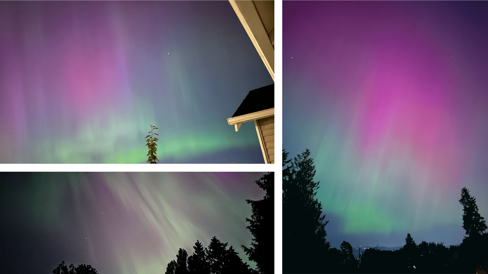My teammates and I snapped images of the aurora borealis when it was visible in Seattle.
My mood-boarding efforts, specifically the visual of the two paths, made their way onto the product’s front page, fliers, and brochures. It was a nice touch since it touched on many of the keywords my teammates and I resonated with.
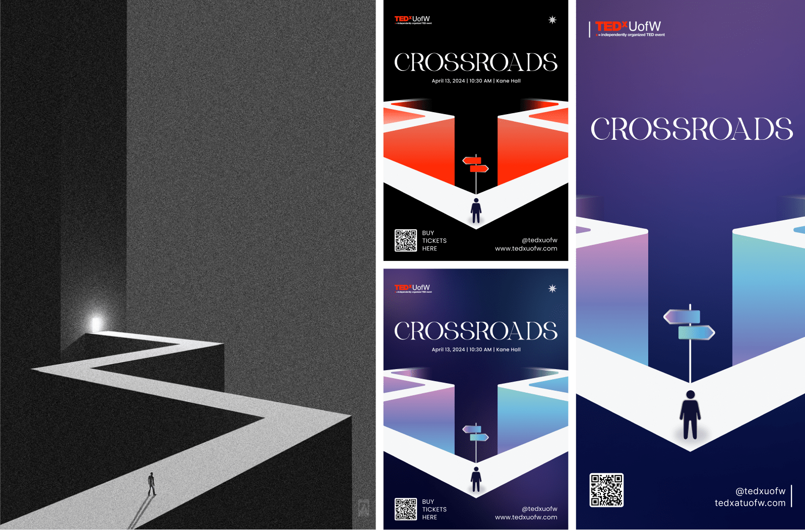My original mood-boarding image (left) became a major player in event marketing.
Collaborating with team members with vast experience in motion and animation design has taught me one thing: expectations were set high. As designers, my team and I wanted the product to feel magnificent and have meaningful animation that adds more to the user experience. However, my time working with engineers brought me back to reality. It would be unrealistic and impractical for the design team to request the engineers to implement mouth-watering website animations when time is of the essence.
I came up with a solution that balanced time-effective implementation and purposeful animations that promote UX. After some experimentation, I opted to focus on animations that were based entirely on HTML and CSS. This way, I can pass the engineering team actionable source code that would speed up their workflow.

I prototyped the website load-in animation using Figma (the moving background from the GIF due to file size).
Due to more time spent on brand experimentation, the design team had to rush the website design. As such, the design hand-off was close to the expected website release. Therefore, it was paramount that the development phase ran smoothly.
At first, it was smooth sailing. One day, the design director told me that the organization's leaders denied one of the design team's requests. The request involved condensing the text content on some card components, like the ones introducing the speakers. The design team optimized the prototype for a specific text amount. The actual content was three to four times the amount envisioned in the design.
Ignoring the design team's objections about content overload and the decreased likelihood of visitors reading the big blocks of text on the website, the organization's leaders insisted that the content must remain unchanged.
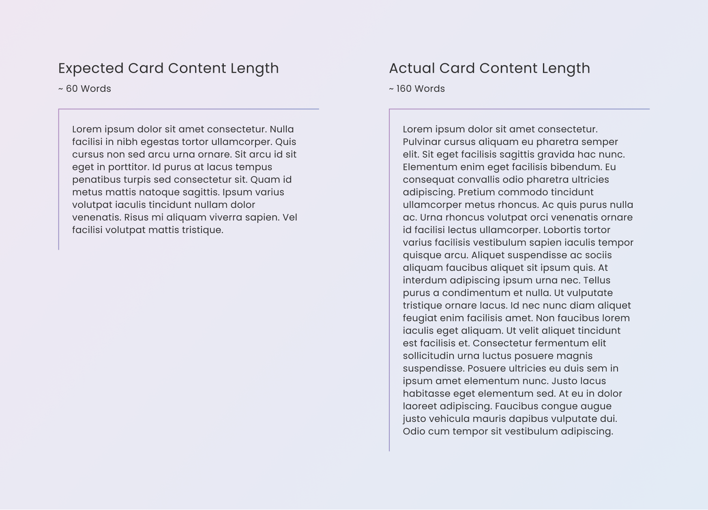The actual length of the required content was longer than expected.
I took on the challenge since I was arm’s length away from the engineers and knew their progress. The engineers had already completed most of the website layout and components, and due to the time constraints, the ideal solution must work with the current design. So, the question became how do I fit a lot of content into the current design and make it look good while keeping the user experience high?
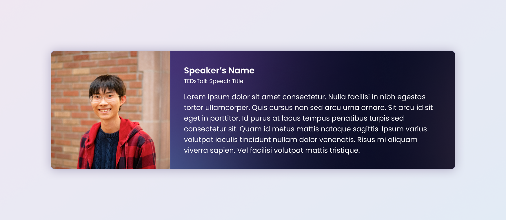The original version of a speakers' card only accommodated several sentences at most.
If I forced the entire content into the current design, it wouldn’t fit unless I clip the text. I could also add a scroll bar and allow scrolling on the card, but having the text flow to the edge by default makes the design cluttered. Therefore, I added a text gradient that made the text disappear as it approached the bottom edge of the card. To facilitate a cleaner appearance, I made the text gradient the rest state and hid the scroll bar. Then, when the user hovers over the card, the text color will become solid to reveal the scrollable content.
This approach was so well-liked by the design and engineering team that it became a part of the website’s visual language. Since the deadline neared, I used my knowledge of HTML and CSS to execute my concept, passing lines of code to the engineers to speed up their workflow.

My modified version of the speakers' card meets the organization leader's requirements by accommodating more text.
I had the pleasure of working with Eddy during my first year at the University of Washington as part of TEDxUofW. Eddy impressed me with his versatility—he excels in UX research, creates beautiful high-fidelity prototypes, and has a thorough understanding of design systems, as demonstrated in his work on the 2024 TEDxUofW conference website.
Eddy is not only a skilled designer but also a natural leader. He works seamlessly with cross-functional teams, meets deadlines with noteworthy time management, and consistently delivers high-quality results. His passion for design is evident in everything he does, and he brings a positive, motivational energy whenever he is present.
I would gladly work with Eddy again, and anyone lucky enough to collaborate with him will quickly recognize what a great addition he is to any team.
Michelle Nguyen
UX Designer
TEDxUofW
I had the opportunity to work with Eddy this past year on TEDxUW, and I loved seeing his technical expertise shine time and time again. His ability to cross-collaborate with our Web Development team to ensure we had clear communication of our needs was excellent and indicative of how prepared he is in a professional capacity. On a personal level, Eddy’s wit and approachable nature make him a joy to work with. I have no doubt he’s well-equipped to excel in any role he pursues.
Stephanie Chou
Designer
TEDxUofW
See what other people are saying about me here.
The delivered website is by no means a perfect product. Though it does many things well, like fulfilling the objective as the entry-point to the ticket sales and hyping up visitors for the conference, it also does some things poorly. One glaring issue was the website’s content proportions. Some elements are too big, while others are too small. There was a lack of white space for content to breathe. All of these flaws build up and could hamper the user’s experience of the website and erode trust in the TEDxUofW brand.
Looking back, I would have leveraged my experience designing and developing responsive websites. Doing that could have allowed me to form concrete arguments for proper element sizing and breathing room. When I noticed the errors through the chaos, it was too late. Moving forward, I will be more assertive and scrutinize ideas early in the project to ensure that my team delivers a high-quality product that each member is proud of.
Among my previous projects and teams up to this point, I haven’t had many chances to get to know my teammates outside of collaborating with them. The common trend has been to do work, and then all teammates would go their separate ways. Perhaps the most important thing I’ll take away from working with this team of talented individuals is that a large part of achieving goals is also knowing the people I work with. My team and I formed some of the most pivotal contributions during and after the hang-out events when work wasn’t the main focus.
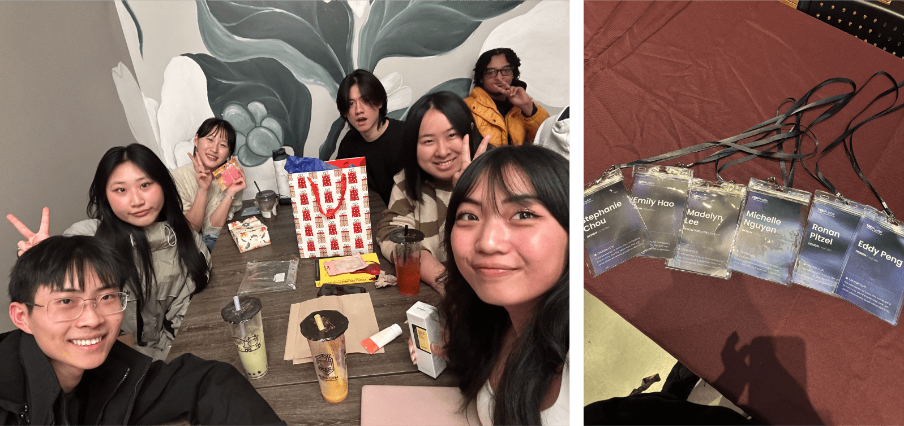
Back To All Projects